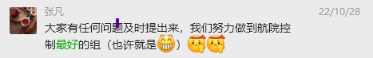

我们一起做大!做强!
We are a research group lead by dr Fan Zhang in SYSU
该内部网络中部署了一些服务，可以通过域名或者ip访问。
如果想通过ip访问请连接该内网wifi，如果想使用域名访问需要在连接wifi的基础上设置代理或者设置路由器ip为手动。
如果没有设置代理或者旁路由，将无法访问外网。
代理与路由服务
192.168.31.2:7890 : http proxy service192.168.31.2:7891 : socks proxy service192.168.31.2:7892 : redir service192.168.31.2:7893 : mixed http+socks services192.168.31.2:7894 : http proxy service by tinyproxy. if you have some network problem, you can link to this proxy. This proxy has no extra work with the connection192.168.31.2:4000 : nomachine 远程桌面登录服务
同时使用花生壳也进行了内网穿透，可以使用命令ssh -L 7891:localhost:7893 orangepi@6p0024h666.goho.co -p 53748 远程登录
网站服务
显示ip地址
fan of Dr Fan
